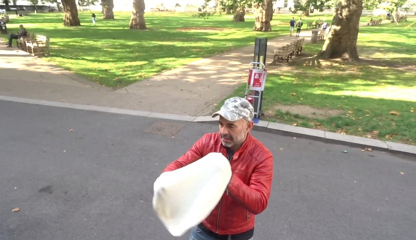

До: исходный кадр 76 (00:03.167) — серая худи

После (nano-banana-2): красная кожаная куртка, лицо/фон сохранены
swap / edit) на базе MiniMax-H3 / Viggle-Remake и облака GPUniq
audio.m4acontact_sheetnano-banana-2 · ref_1.pnggemini-3-flash · 6 секцийjob.json · чек-метрикиMiniMax-H3 + Viggle LoRAloki-remake prepare (по пунктам)video/normalize.py
1.03 сек · $0
MiniMax-H3 жёстко требует 24 fps, стороны кратные 32 и число кадров строго по сетке
17n + 5 (от 90 до 345 = до 14.4 сек). Скрипт через FFmpeg приводит любой входной ролик к нужному
канвасу (cond.mp4: 832×480, 24 fps, 226 кадров) и отдельно вырезает чистую
аудиодорожку (audio.m4a), чтобы не потерять и не сдвинуть звук.
video/shots.py
0.40 сек · $0
OpenCV ищет резкие монтажные склейки (по HSV-гистограммам и скачку яркости) и разбивает видео на сцены
([Shot 1], [Shot 2]…). Внутри каждой сцены он оценивает резкость (Laplacian variance), чтобы
не схватить смазанный кадр в движении, вырезает лучший опорный кадр (shot_1_f76.png — 76-й кадр,
00:03.167) и склеивает 16-кадровую сетку с таймкодами contact_sheet.jpg для анализа всей динамики.
gpuniq/painter.py
54.17 сек · $0.0500
Viggle-Remake устроен так: ему нужно показать минимум 1 уже изменённый кадр, и он сам натянет изменение
на всё видео. Скрипт отправляет shot_1_f76.png (и фото-референс юзера, если передан --ref) в
GPUniq Image Jobs на nano-banana-2 (при отказе модерации или сбое автоматически переключается на
gpt-image-2), подгоняет результат точно под целевой канвас и сохраняет painted/ref_1.png.
gpuniq/prompter.py
19.92 сек · $0.0083
Видеомодель плохо слушается свободного текста — ей нужна строгая 6-секционная структура
(subject_definitions, summary, retention_analysis,
detailed_description, overall_soundscape, non_diegetic_music) с точными
таймкодами. Скрипт отправляет в gemini-3-flash (с бюджетом max_tokens=4096 под reasoning)
раскадровку contact_sheet.jpg, готовый ref_1.png и таблицу таймингов, затем прогоняет ответ
через валидатор (ASCII, порядок секций, запрет слова dim, контроль таймкодов до конца ролика; при
ошибке автоматически делает 1 ремонтный запрос) и сохраняет prompt.txt.
job.json — pipeline.py
Итого: 75.5 сек · $0.0583
Все пути к артефактам, номер привязанного кадра (pin_frame: 76), итоговый промпт, время каждого этапа
и фактические затраты сохраняются в структурированный job.json, полностью готовый к отправке на GPU-воркер.
Тест запускался на эталонном демо-ролике из репозитория Viggle (samples/demo_source.mp4, 9.4 сек, пиццайоло
в парке) в режиме edit с инструкцией: «Change the man's grey hoodie into a bright red leather jacket,
keeping his face, grey cap, jeans, pizza dough, and park background identical» (--tier 480 --max-refs 1).

| Метрика / Проверка | Результат | Комментарий |
|---|---|---|
Выходной канвас (ffprobe) |
832×480 · 24 fps · 226 кадров |
Кратность 32, сетка 17n + 5, аудио вынесено в audio.m4a |
Время подготовки (7fcc7066e2) |
75.52 сек суммарно | normalize 1.03s · shots 0.40s · paint 54.17s · prompt 19.92s |
| Стоимость подготовки (GPUniq API) | $0.0583 (~6 ₽) | nano-banana-2: $0.0500 · gemini-3-flash: $0.0083 |
| Качество кода и автотесты | ruff 0 ошибок · pytest 12/12 passed |
Покрытие: нормализация, сцены, валидатор промпта, mock GPUniq + fallback |
| Баланс аккаунта GPUniq после тестов | $112.0142 (свободно) | Доступно 12× H200 ($5.81/ч) и 11× RTX PRO 6000 S ($2.73/ч) |
| Этап | Статус | Что сделано / планируется |
|---|---|---|
| Шаг 0 — Инициализация | Готово · e9f66ab | Репо kilebles/loki-prj, uv-окружение, .gitignore, базовая структура |
Шаг 1 — Локальный пайплайн prepare |
Готово · 913423b | Нормализация, детектор склеек, painter, 6-секционный VLM-промптер, CLI, тесты и live smoke-тест |
| Шаг 2 — GPU-стенд на GPUniq | Ожидает роликов Насти | Разворачивание H200 (bf16), тест sample.py + проверка _native_cudnn |
| Шаг 3 — Прогон кейсов и замер экономики | План | Тест 5–7 роликов в нативном 720p vs 480p + апскейл, тест Q8_0 на RTX PRO 6000 |
| Шаг 4 — Сдача PoC и переход в прод | План | Итоговый отчёт заказчику, затем HTTP API + Redis + GPUniq Burst автоскейлер |